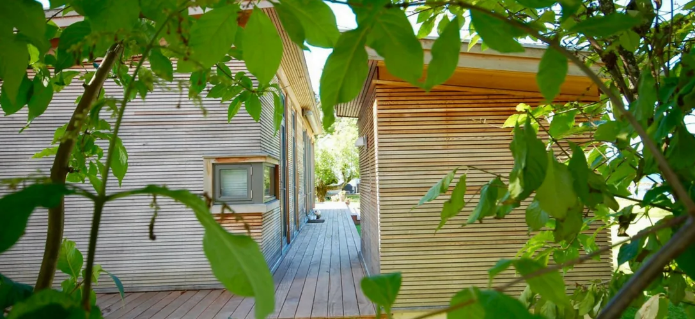
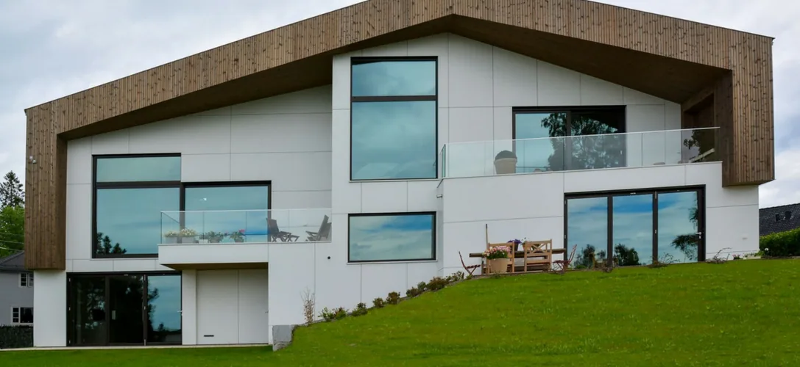
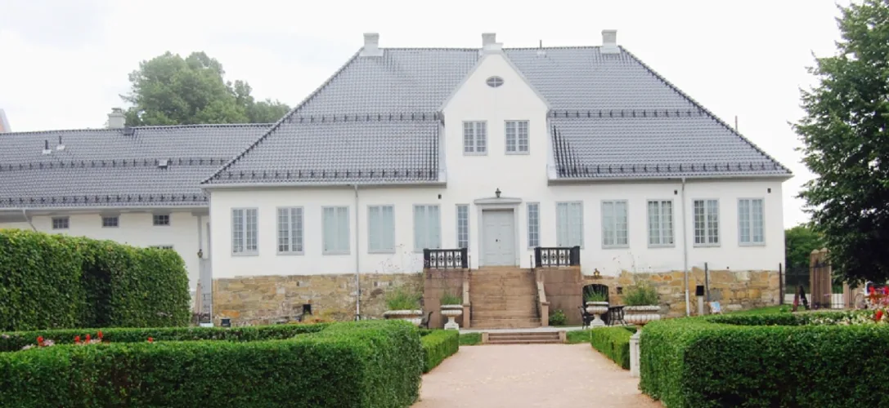
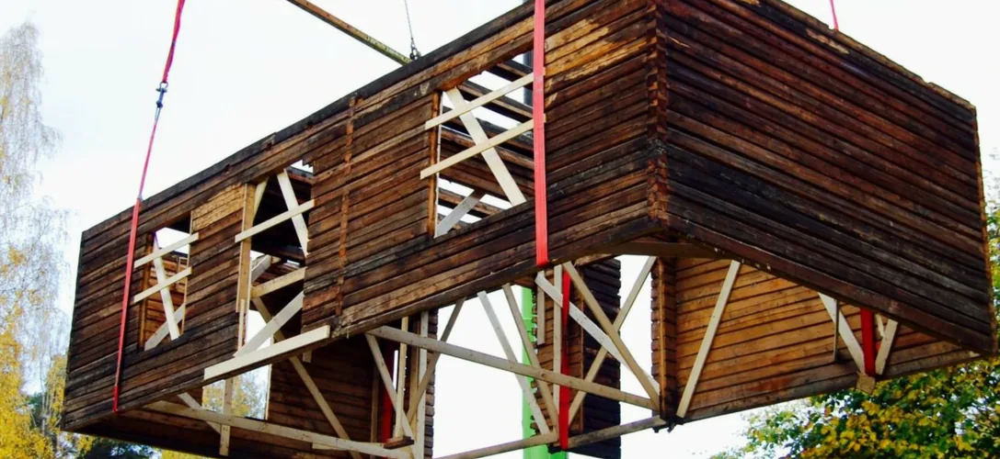
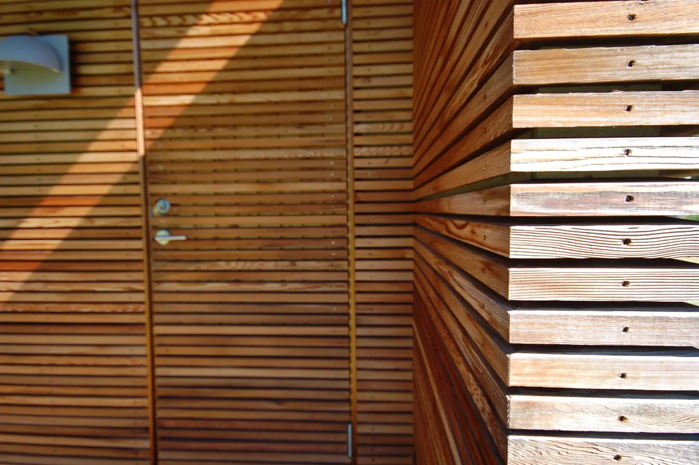

Nybygg
Private og kommunale nybygg, fra grunnmur til innflytting.
Ansnes Entreprenør AS har over 30 års erfaring med byggeprosjekter i Asker og omegn. Fra arkitekttegnede boliger og hytter til restaurering av fredede bygg – og rehabilitering der andre har gitt opp.

Vi tar oppdrag for private og kommunale byggherrer, og har håndtverkere som kan faget sitt.
Private og kommunale nybygg, fra grunnmur til innflytting.
Sommer- og vinterhytter, tilpasset tomta og bruken.
Vi bygger etter tegning, og tar dialogen med arkitekt underveis.
Krevende bygg der det meste må gjøres – eller bare det riktige.
Restaurering av vernet og fredet bygg, med respekt for historien.
Løsninger der standard ikke er godt nok, og håndtverket avgjør.
Noen av boligene, hyttene og byggene vi har levert – og viser fram.

Arkitekttegnet bolig · Asker
Bolig med tilbygg · Asker
Takkonstruksjon i tømmer
Trepanel, innvendigVi har alltid hatt fokus på faglig dyktighet og på at kunden skal føle seg trygg gjennom hele byggeprosessen. Det er ikke bare det vi bygger som skal holde – det skal være enkelt å samarbeide med oss også.
Om AnsnesFortell oss hva du skal bygge eller rehabilitere. Vi ser på det og kommer tilbake med et svar – og et tilbud du kan lese.